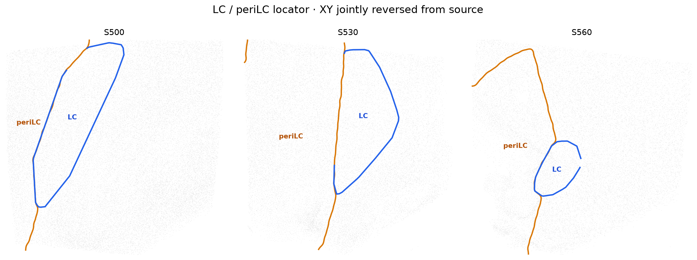
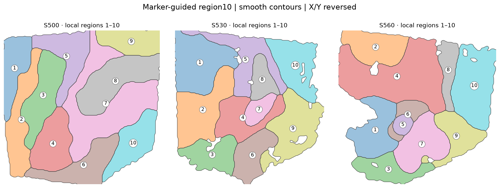

LC / periLC locator
LC and the operational periLC field are shown only as anatomical locators. Gene-expression panels below show the complete section and are not cropped to these regions.

Marker-guided section-specific 10-subregion reference
Each section is partitioned independently. The required anchors are Hcrtr1, Bcl11b, Slc5a7, Lmx1a, Piezo2, Slc6a2 and Ghr, supplemented by the most spatially informative genes in that section. Region numbers are local to each section; no cross-section homology is imposed. S560 uses the stronger marker-field smoothing search selected by the marker-preservation gate. All displayed region outlines receive an additional sigma=3.0 grid-unit contour smoothing (Stage963), without changing any cell-level region identity.

S500
anchors + Foxp2, Ebf3, Mc4r, Dscaml1, Slc6a4
smoothing σ=3.6
anchors + Foxp2, Ebf3, Mc4r, Dscaml1, Slc6a4
smoothing σ=3.6
S530
anchors + Mc4r, Fstl4, Ebf3, Foxp2, Meis2
smoothing σ=4.5
anchors + Mc4r, Fstl4, Ebf3, Foxp2, Meis2
smoothing σ=4.5
S560
anchors + Mc4r, Ebf3, Meis2, Slc6a4, Pdyn
smoothing σ=6.5
anchors + Mc4r, Ebf3, Meis2, Slc6a4, Pdyn
smoothing σ=6.5
Topology QA (Stage961): Each main tissue mask contains 10 connected marker-guided regions. The 12 total components reported for S530/S560 arise from two tiny, detached density-mask patches per section (S530: 2 + 13 pixels; S560: 5 + 7 pixels), each under 0.1% of its section mask. Original expression and cell-region assignments are unchanged. View three-section topology QA.
Final gene × section expression atlas
All maps and the anatomical LC/periLC locator use exactly the same reversed X/Y display orientation; raw source coordinates and regional cell labels remain unchanged. Every panel shows an explicit spot-count colorbar and numeric display range. The three sections share one range per gene. Broad genes use a lower saturation ceiling; Snap25 is intentionally shown with an 85th-percentile positive-count maximum so widespread expression remains visible.
Snap25
broad-expression scale · vmax 237.8Zfhx3
shared per-gene scale · vmax 57.9Npy5r
shared per-gene scale · vmax 17.3Hcrtr1
shared per-gene scale · vmax 146.3Bcl11b
shared per-gene scale · vmax 99.9Slc5a7
shared per-gene scale · vmax 67.6Npy1r
shared per-gene scale · vmax 25.1Pdyn
shared per-gene scale · vmax 14.5Lmx1a
shared per-gene scale · vmax 40.0Piezo2
shared per-gene scale · vmax 23.1Tacr1
shared per-gene scale · vmax 25.4Slc6a4
shared per-gene scale · vmax 24.2Slc6a2
shared per-gene scale · vmax 866.9Foxp2
shared per-gene scale · vmax 66.2Fstl4
shared per-gene scale · vmax 28.2Epb41l4a
shared per-gene scale · vmax 37.6Pde11a
shared per-gene scale · vmax 37.9Slc32a1
broad-expression scale · vmax 55.0Ghr
shared per-gene scale · vmax 169.1Ebf3
broad-expression scale · vmax 43.4Cep112
shared per-gene scale · vmax 13.1Otx2os1
shared per-gene scale · vmax 17.3Dscaml1
shared per-gene scale · vmax 22.6Mc4r
broad-expression scale · vmax 108.7Meis2
broad-expression scale · vmax 78.4Slc17a6
broad-expression scale · vmax 18.7Downstream spatial analyses
Only final biological summaries are retained here. Region numbers remain local to each section; no S500↔S530↔S560 region homology is assumed.
Non-fitting-gene check (Stage962): 15 genes per section were not used in the region fitting. Their median within-Fine26 regional expression eta-squared is S500 0.0625, S530 0.0846, S560 0.0639. These values are descriptive within the same tissue, not an independent animal replication or a p-value. Per-gene audit table
Region10 × Fine26 enrichment

Frozen Fine26 identities show strong section-local enrichment and depletion across the marker-guided spatial regions.
Region10 morphology and local density

Section-normalized soma geometry and local 10-NN density provide an orthogonal anatomical readout of the spatial domains.
Spatial modulation remaining within Fine26

Region10 still explains expression variation after conditioning on frozen Fine26 identity, showing that molecular cell identity does not exhaust spatial organization.
True single-cell segmentation-body bridge
Current Fine26 labels rendered on true segmentation bodies rather than cell-center points.
Single-cell bridge
The spatial atlas is linked to the frozen Fine26 single-cell state space without re-clustering for versioning. The dedicated page collects taxonomy, section reproducibility, morphology and projection analyses.
Open current single-cell bridge →Data provenance
Stage943 expression authority · Stage956 display authority · 81-map manifest · region marker manifest · colorbar policy